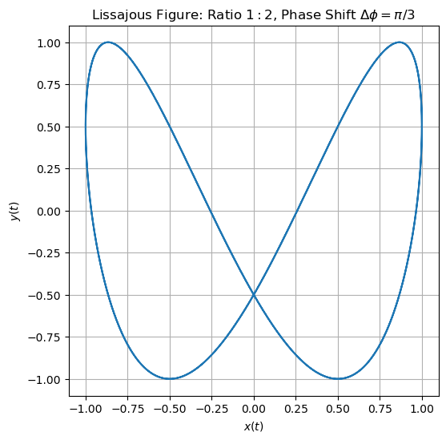
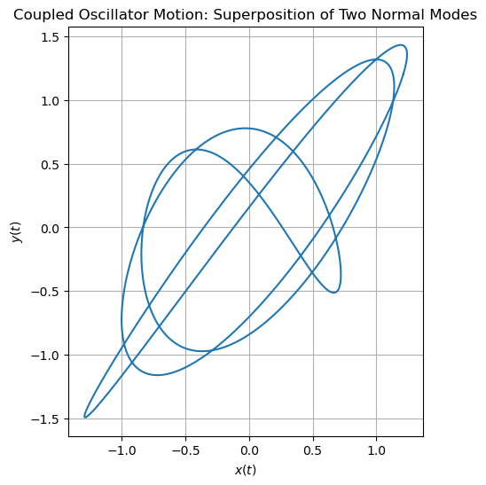
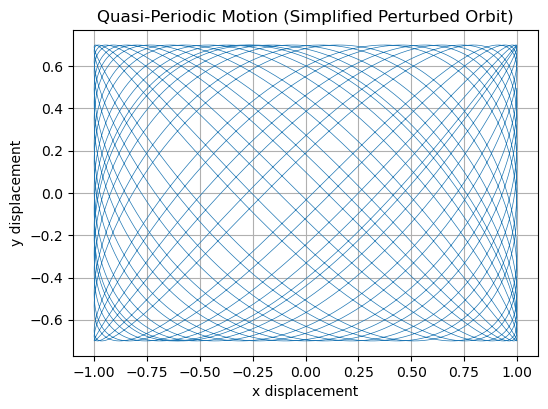

B2.4 Example Applications of Lissajous Figures#
Lissajous figures are more than mathematical patterns—they are diagnostic tools that reveal the frequency ratio, phase relationship, and synchronization between two oscillatory motions.
Below, we examine three of the most important applications in detail:
Signal comparison on oscilloscopes
Coupled oscillators and normal modes
Planetary and celestial quasi-periodic motion
B2.4.1 Signal Comparison on an Oscilloscope#
One of the most important practical uses of Lissajous figures is in signal comparison, especially on traditional analog oscilloscopes.
In this setup:
The x-input of the oscilloscope is driven by one signal
(e.g., a reference oscillator),The y-input is driven by another signal
(e.g., the device being tested).
The oscilloscope beam traces out the parametric curve
The resulting figure immediately reveals three key pieces of information.
Frequency Ratio#
The number of horizontal vs. vertical lobes gives the frequency ratio
Examples:
1 horizontal and 2 vertical lobes → ratio \(1:2\)
3 horizontal and 4 vertical lobes → ratio \(3:4\)
A drifting or non-closing pattern → frequencies not locked (or irrational ratio)
This is how radio technicians historically compared oscillators and aligned frequency standards.
Phase Difference#
Once the frequency ratio is known, the shape, tilt, and internal asymmetry of the Lissajous figure reveal the phase difference
Typical interpretations:
A right-leaning curve → \(y(t)\) leads \(x(t)\)
A left-leaning curve → \(y(t)\) lags \(x(t)\)
\(\Delta\phi = 0\) or \(\pi\) often produces mirror-symmetric figures
\(\Delta\phi = \pi/2\) rotates the curve into a different orientation
The key idea: frequency ratio first, then phase.
Synchronization (Locking)#
A closed, stationary Lissajous figure means the two signals are locked with a rational frequency ratio.
If the pattern:
rotates slowly,
changes shape, or
fills in an area,
then the frequencies differ slightly or the oscillators are drifting.
This is analogous to beat phenomena in sound waves.
Detailed Example: Ratio \(1:2\) With Phase Shift \(\Delta\phi = \pi/3\)#
In the example below:
The x-signal is
\[ x(t) = \cos(t), \]The y-signal oscillates twice as fast with a phase lead of \(\pi/3\):
\[ y(t) = \cos(2t + \pi/3). \]
This produces:
1 horizontal lobe,
2 vertical lobes,
a distinct tilt encoding the phase difference.
An engineer reading this on an oscilloscope would immediately infer:
“Frequency ratio \(1{:}2\),”
“Phase lead \(\approx 60^\circ\).”
The next cell contains the Python script that generates this Lissajous figure.

B2.4.2 Coupled Oscillators and Normal Modes#
Mechanical systems with two degrees of freedom—such as two-mass spring systems, vibrating plates, or small oscillations of a double pendulum—possess two normal modes, each with its own natural frequency.
If only one mode is excited, the motion is simple and one-dimensional.
But if the system is disturbed in a general direction, both modes are excited, and the resulting motion in \((x,y)\) space becomes a superposition of two oscillations with different frequencies.
This produces Lissajous figures whose geometry contains direct physical information about the system.
Normal-Mode Frequencies Become the “Frequencies” of the Lissajous Curve#
Suppose the system has normal-mode frequencies \(\omega_1\) and \(\omega_2\).
Then the motion of the two coordinates can be written as
Here:
\((A_{1x}, A_{1y})\) = the shape of Mode 1
\((A_{2x}, A_{2y})\) = the shape of Mode 2
The ratio
determines the lobe structure of the resulting Lissajous figure.
If the ratio is:
rational → the motion in \((x,y)\) space is closed and repeats
irrational → the motion never repeats and becomes quasi-periodic
This parallels exactly the behavior studied earlier.
Energy Distribution and Mode Mixing#
The relative amplitudes \(A_{1x}, A_{1y}, A_{2x}, A_{2y}\) determine:
the orientation of the curve,
how “stretched” it is in each direction,
the relative contribution of each mode.
For example:
If Mode 1 dominates → the curve resembles a slightly distorted version of Mode 1’s shape.
If Mode 2 dominates → the opposite.
If both are strong → the motion explores a larger portion of the plane and shows a mixed Lissajous pattern.
This provides a visual diagnostic for energy distribution across modes—widely used in structural engineering and vibration analysis.
Phase Relationships Between Modes#
The phase difference
introduces additional twists or flips in the curve.
Changing \(\Delta\phi\) rotates and reshapes the trajectory but does not alter the fundamental lobe count (set by \(\omega_1 / \omega_2\)).
In physical systems, \(\Delta\phi\) can signal:
how the system was initially displaced,
mode coupling strength,
damping differences between modes.
Detailed Example: 3:4 Normal-Mode Frequencies#
The example below models a system with two normal modes:
Mode 1 frequency: \(\omega_1 = 3\)
Mode 2 frequency: \(\omega_2 = 4\)
Each coordinate receives contributions from both modes:
Mode 1 dominates in \(x(t)\),
Mode 2 dominates in \(y(t)\).
A phase shift of \(\pi/4\) ensures that the modes do not overlap trivially.
You will see a closed Lissajous figure because the ratio \(3{:}4\) is rational.
The next cell provides the Python code that generates this plot.

B2.4.3 Planetary Motion and Quasi-Periodic Orbits#
Lissajous figures also appear naturally in celestial mechanics, where motion often includes two independent oscillations with different natural frequencies.
Even though real planetary motion is not exactly sinusoidal, linearized or perturbative models often reveal underlying frequency pairs.
Plotting one oscillatory component against another frequently produces Lissajous-like curves whose closure or non-closure indicates the relationship between the associated frequencies.
We discuss two primary contexts:
Oscillations Near Lagrange Points (L1, L2, L3)#
In the restricted three-body problem, motion near a stable Lagrange point (such as Earth–Sun L1 or L2) can be decomposed into two small oscillations:
an in-plane oscillation,
an out-of-plane oscillation,
each with its own natural frequency.
To first order, the motion can be written as
where \(\omega_x\) and \(\omega_y\) are not generally equal.
If \(\omega_x / \omega_y\) is rational, the spacecraft traces a closed Lissajous-type path.
If the ratio is irrational, the spacecraft follows a quasi-periodic orbit, never exactly repeating.
Real spacecraft trajectories—such as those of SOHO, WMAP, and JWST—exploit these motions, selecting initial conditions that yield stable, predictable paths near L1 or L2.
Perturbed or Precessing Kepler Orbits#
If a planet (or a perturbed Kepler orbit) experiences two oscillations:
a radial “breathing” oscillation,
an angular oscillation,
with different frequencies,
then plotting deviations in two orthogonal coordinates can produce Lissajous-like curves.
When
is irrational, the orbit slowly precesses (e.g., Mercury’s perihelion motion) and never repeats exactly—mirroring the dense, non-closing behavior of an irrational-ratio Lissajous figure.
Why These Curves Matter Physically#
Lissajous-like patterns reveal:
quasi-periodicity (common in multi-frequency gravitational systems),
resonances (e.g., Jupiter’s influence on asteroid belts),
stability or instability of equilibrium points,
phase drift between radial and tangential oscillations,
motion near equilibria where linearization is valid.
This makes them a powerful visualization tool for understanding orbital dynamics and spacecraft navigation.
Detailed Example: Quasi-Periodic Motion With an Irrational Frequency Ratio#
In the simplified model below:
\(\omega_r = 1\) (radial-like oscillation)
\(\omega_t = \sqrt{2}\) (tangential-like oscillation)
Because \(\sqrt{2}\) is irrational, the ratio
cannot be expressed as a ratio of integers, so the resulting curve never closes.
Instead, it gradually fills an allowed region—just like quasi-periodic planetary motion.
The next cell contains the Python script that generates this visualization.
